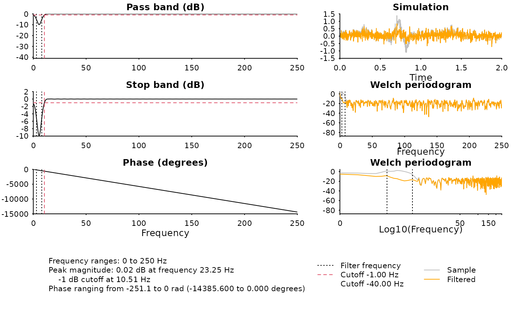
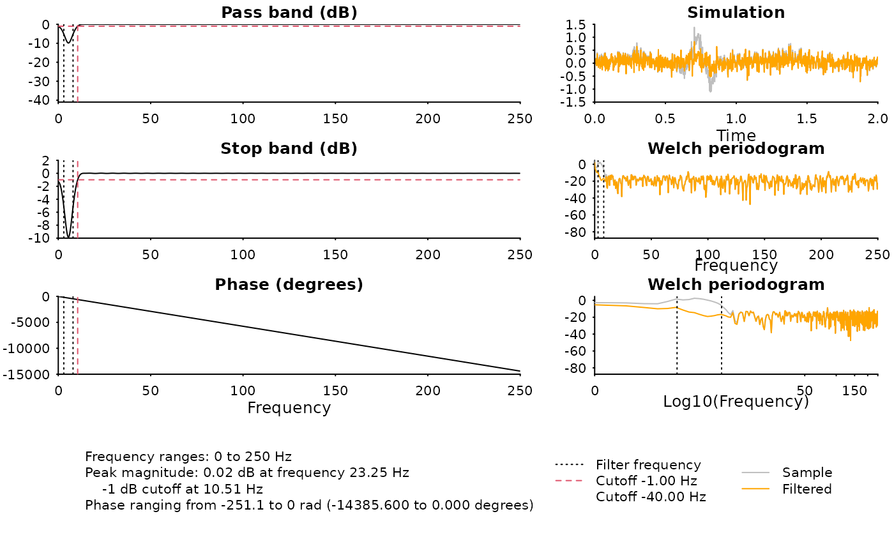

Design 'FIR' filter using firls
Usage
design_filter_fir(
sample_rate,
filter_order = NA,
data_size = NA,
high_pass_freq = NA,
high_pass_trans_freq = NA,
low_pass_freq = NA,
low_pass_trans_freq = NA,
stopband_attenuation = 40,
scale = TRUE,
method = c("kaiser", "firls", "remez")
)Arguments
- sample_rate
sampling frequency
- filter_order
filter order, leave
NA(default) if undecided- data_size
minimum length of data to apply the filter, used to decide the maximum filter order. For 'FIR' filter, data length must be greater than
3xfilter_order- high_pass_freq
high-pass frequency; default is
NA(no high-pass filter will be applied)- high_pass_trans_freq
high-pass frequency band-width; default is automatically inferred from data size. Frequency
high_pass_freq - high_pass_trans_freqis the corner of the stop-band- low_pass_freq
low-pass frequency; default is
NA(no low-pass filter will be applied)- low_pass_trans_freq
low-pass frequency band-width; default is automatically inferred from data size. Frequency
low_pass_freq + low_pass_trans_freqis the corner of the stop-band- stopband_attenuation
allowable power attenuation (in decibel) at transition frequency; default is
40dB.- scale
whether to scale the filter for unity gain
- method
method to generate 'FIR' filter, default is using
kaiserestimate, other choices arefirls(withhammingwindow) andremezdesign.
Details
Filter type is determined from high_pass_freq and
low_pass_freq. High-pass frequency is ignored if high_pass_freq
is NA, hence the filter is low-pass filter. When
low_pass_freq is NA, then
the filter is high-pass filter. When both high_pass_freq and
low_pass_freq are valid (positive, less than 'Nyquist'), then
the filter is a band-pass filter if band-pass is less than low-pass
frequency, otherwise the filter is band-stop.
Although the peak amplitudes are set at 1 by low_pass_freq and
high_pass_freq, the transition from peak amplitude to zero require
a transition, which is tricky but also important to set.
When 'FIR' filters have too steep transition boundaries, the filter tends to
have ripples in peak amplitude, introducing artifacts to the final signals.
When the filter is too flat, components from unwanted frequencies may also
get aliased into the filtered signals. Ideally, the transition bandwidth
cannot be too steep nor too flat. In this function, users may control
the transition frequency bandwidths via low_pass_trans_freq and
high_pass_trans_freq. The power at the end of transition is defined
by stopband_attenuation, with default value of 40 (i.e.
-40 dB, this number is automatically negated during the calculation).
By design, a low-pass 5 Hz filter with 1 Hz transition bandwidth results in
around -40 dB power at 6 Hz.
Examples
# ---- Basic -----------------------------
sample_rate <- 500
data_size <- 1000
# low-pass at 5 Hz, with auto transition bandwidth
# from kaiser's method, with default stopband attenuation = 40 dB
filter <- design_filter_fir(
low_pass_freq = 5,
sample_rate = sample_rate,
data_size = data_size
)
# Passband ripple is around 0.08 dB
# stopband attenuation is around 40 dB
print(filter)
#> <FIR filter>
#> Type : low
#> Method: kaiser
#> Order: 332
#> Magnitude:
#> Freq=5 Hz, mag=-0.1005 dB (expected=-0.0873 dB)
#> Freq=8.4 Hz, mag=-40.92 dB (expected=-40 dB)
#> Reciprocal condition number: 1 > .Machine$double.eps
diagnose_filter(
filter$b, filter$a,
fs = sample_rate,
n = data_size,
cutoffs = c(-3, -6, -40),
vlines = 5
)
 # ---- Advanced ---------------------------------------------
sample_rate <- 500
data_size <- 1000
# Rejecting 3-8 Hz, with transition bandwidth 0.5 Hz at both ends
# Using least-square (firls) to generate FIR filter
# Suggesting the filter order n=160
filter <- design_filter_fir(
low_pass_freq = 3, low_pass_trans_freq = 0.5,
high_pass_freq = 8, high_pass_trans_freq = 0.5,
filter_order = 160,
sample_rate = sample_rate,
data_size = data_size,
method = "firls"
)
#
print(filter)
#> <FIR filter>
#> Type : stop
#> Method: firls
#> Order: 160
#> Magnitude:
#> Freq=3 Hz, mag=-5.137 dB (expected=-0.0873 dB)
#> Freq=8 Hz, mag=-5.196 dB (expected=-0.0873 dB)
#> Freq=3.5 Hz, mag=-6.376 dB (expected=-40 dB)
#> Freq=7.5 Hz, mag=-6.44 dB (expected=-40 dB)
#> Reciprocal condition number: 1 > .Machine$double.eps
diagnose_filter(
filter$b, filter$a,
fs = sample_rate,
n = data_size,
cutoffs = c(-1, -40),
vlines = c(3, 8)
)

# ---- Advanced ---------------------------------------------
sample_rate <- 500
data_size <- 1000
# Rejecting 3-8 Hz, with transition bandwidth 0.5 Hz at both ends
# Using least-square (firls) to generate FIR filter
# Suggesting the filter order n=160
filter <- design_filter_fir(
low_pass_freq = 3, low_pass_trans_freq = 0.5,
high_pass_freq = 8, high_pass_trans_freq = 0.5,
filter_order = 160,
sample_rate = sample_rate,
data_size = data_size,
method = "firls"
)
#
print(filter)
#> <FIR filter>
#> Type : stop
#> Method: firls
#> Order: 160
#> Magnitude:
#> Freq=3 Hz, mag=-5.137 dB (expected=-0.0873 dB)
#> Freq=8 Hz, mag=-5.196 dB (expected=-0.0873 dB)
#> Freq=3.5 Hz, mag=-6.376 dB (expected=-40 dB)
#> Freq=7.5 Hz, mag=-6.44 dB (expected=-40 dB)
#> Reciprocal condition number: 1 > .Machine$double.eps
diagnose_filter(
filter$b, filter$a,
fs = sample_rate,
n = data_size,
cutoffs = c(-1, -40),
vlines = c(3, 8)
)
